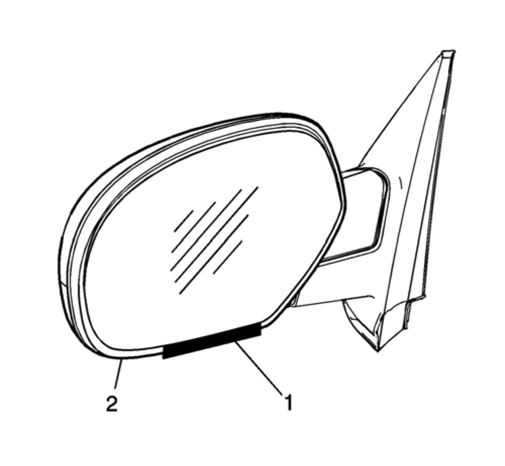
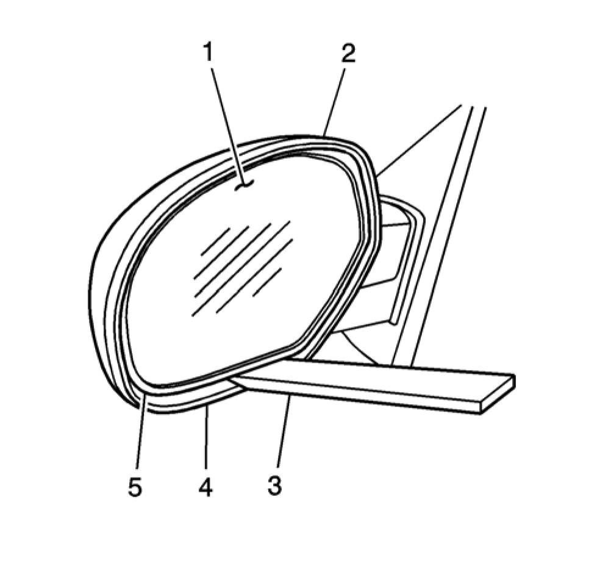
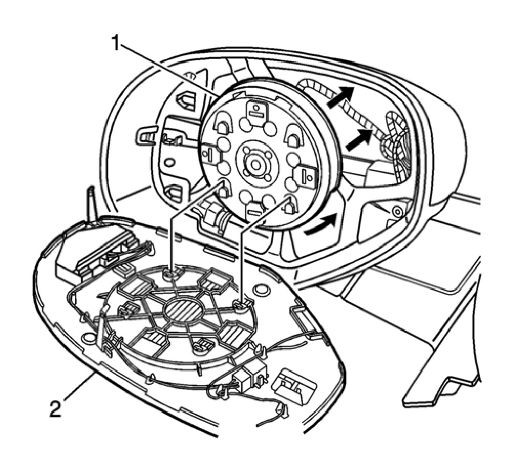
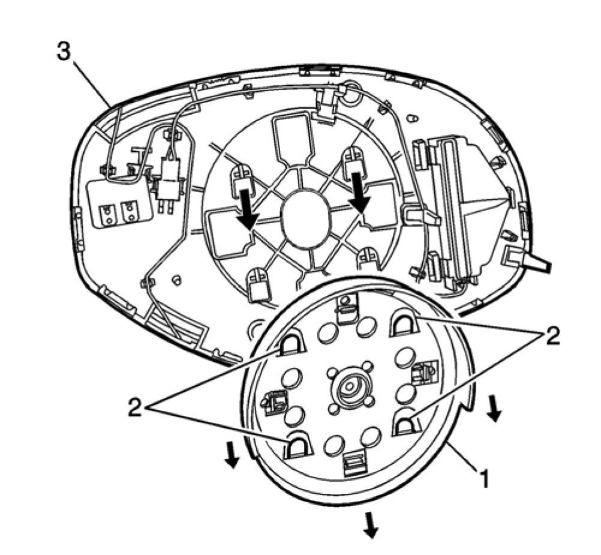
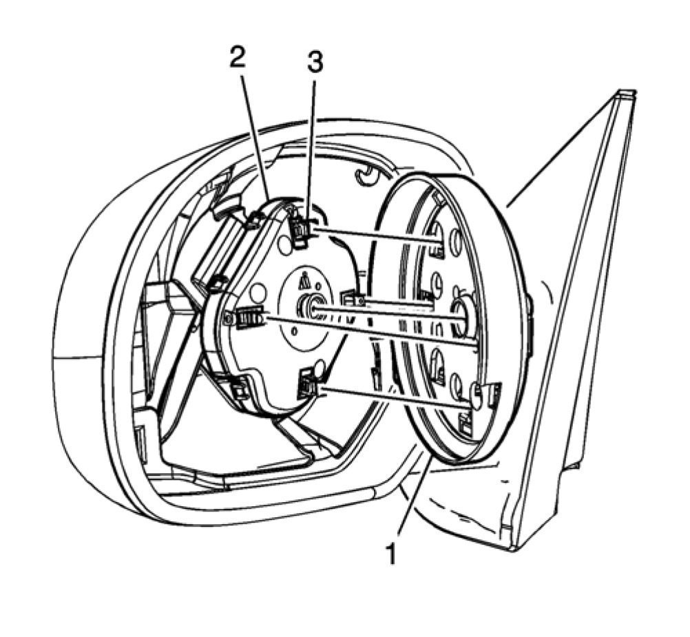
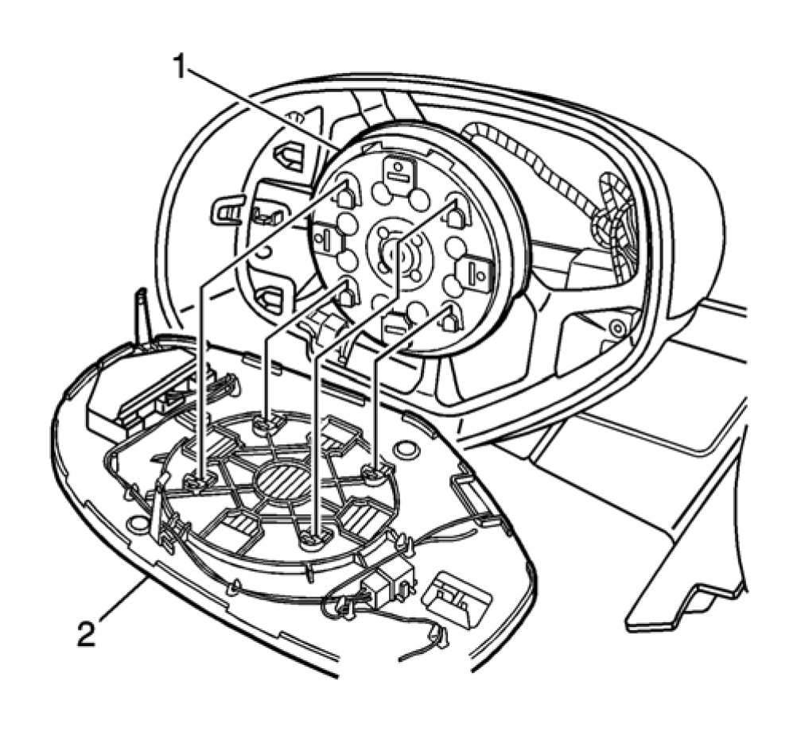
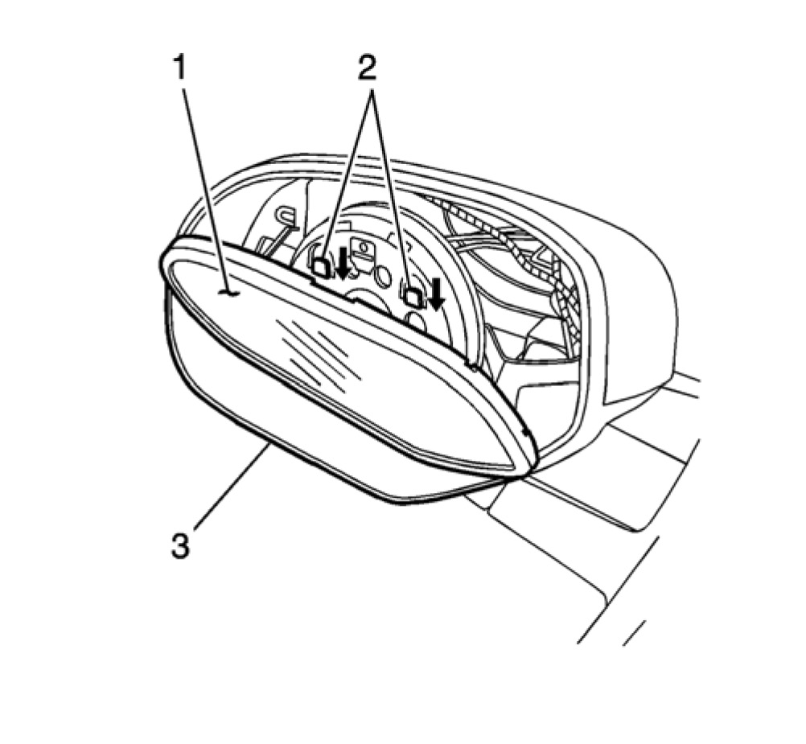

Outside Rearview Mirror Glass Replacement
Outside Rearview Mirror Glass Replacement
Removal Procedure

Warning: Approved safety glasses and gloves should be worn when performing this procedure to reduce the chance of personal injury.
Caution: When servicing electrochromic glass that is broken, or if glass breaks during servicing, be cautious not to spill electrochromic fluid onto vehicle. Doing so will cause damage to the vehicle.
1. Apply several layers of masking tape (1) to the mirror lower housing edge (2) to protect the finish.

2. Remove the mirror lens as follows:
2.1 Push the top center of the mirror inward.
2.2 Place your hand on the back of the mirror housing (2).
2.3 Use a suitable rigid plastic tool (3) 3.81 cm (1.5 in) wide. Insert the rigid plastic tool (3) 3 cm (1.5 in) between the mirror lower housing edge (4) and the lower edge of the mirror lens (5).
2.4 Lift upward on the rigid plastic tool (3) until the mirror lens (1) releases from the motor/actuator ring.
3. Disconnect the electrical connectors from the back of the mirror lens.

4. The motor/actuator ring (1) must stay with the motor/actuator, Not with the mirror lens (2).

Note: When removing the motor/actuator ring, use care Not to damage the mirror lens.
5. If the mirror motor/actuator ring (1) stays attached to mirror lens (3), the motor/actuator ring (1) MUST be removed from the mirror lens.
5.1 Place the mirror lens face down on a soft cloth.
5.2 Remove the motor/actuator ring (1), by sliding the ring downward releasing the tabs (2) from the back mirror lens (3).
Installation Procedure

Important: If the actuator ring is on the motor/actuator go to step 3. If the actuator ring is off do steps 1, 2.
1. Install the motor/actuator ring (1) to the actuator (2), ensure that the actuator tabs (3) are in line with the motor/actuator ring.

2. Place the motor/actuator ring (1) in the center of the motor/actuator (2), press inward until fully seated.
3. Connect the electrical connectors to the mirror lens.

4. Install the mirror lens as follows:
4.1 Push the lower center of the mirror motor actuator ring inward.
4.2 Position the mirror lens (1) on the mirror motor/actuator ring retaining tabs (2).
4.3 Place your hand on the back of the mirror housing (3).
4.4 Push downward using your hand on the mirror lens (1) until it is locks onto the retaining tabs (2).
4.5 Remove the masking tape from the lower edge of the mirror housing.
5. Inspect the mirror for proper operation.